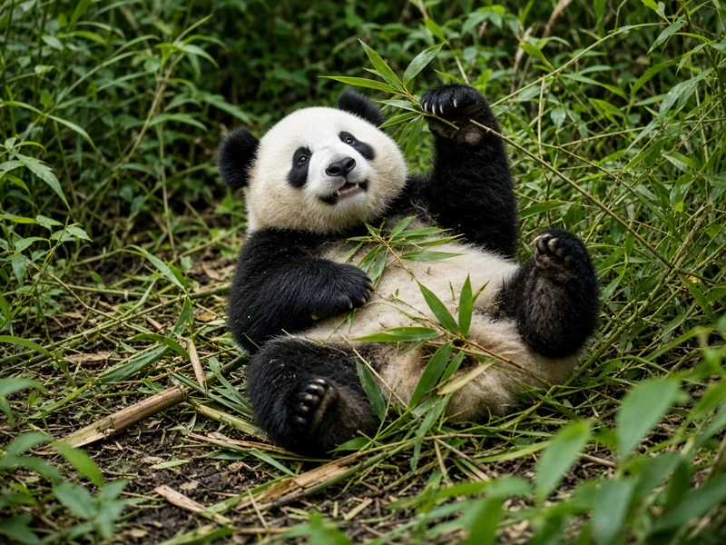

Why do giant pandas roll?
Giant pandas roll because it is useful and because it is fun. Rolling helps them change how they sit while they chew bamboo, recover from a slip on a steep slope, and play with cubs or enrichment. Viral videos make rolling look like a party trick. In real panda behaviour it sits alongside ordinary feeding, resting, and climbing described in our giant panda profile.

Play is a real part of panda life
Cubs wrestle, somersault, and roll while they learn balance and social limits. Smithsonian's National Zoo and San Diego Zoo Wildlife Alliance both highlight play in young giant pandas, including tumbling and rolling. Play declines with age but does not vanish. Adults may still roll during short bouts of play or when interacting with keepers' enrichment. That matches what Zhang and colleagues (2015) found in activity pattern work: giant pandas mix feeding with resting and shorter active behaviours across the day rather than living as pure couch potatoes.
Rolling while eating bamboo
A panda can spend much of the day on bamboo; see how much bamboo a panda eats. Sitting upright with a stem against the false thumb is the classic pose, but pandas also lie on their backs or sides and roll slightly to reach a new clump without standing up. A small roll is often just a posture change, not a performance.
Slopes, snow and lost footing
Giant panda habitat includes steep mountain slopes covered in bamboo (see our habitat guide). A heavy, rounded body on short legs is stable when planted, but a slip can turn into a roll. Observers in reserves have long noted pandas tumbling downhill and getting back up to keep feeding. Johnson, Schaller and Hu's Wolong comparison (1988) placed giant pandas firmly in that rugged forest setting, where footing is uneven. Rolling downhill can be accidental or a quick way to move without climbing back up a muddy path.
What rolling is not
- Not proof of a single emotion. Cameras invite labels like "happy" or "silly." Ethologists stick to play, locomotion, and posture change unless a study measures emotion directly.
- Not unique to captivity. Zoo videos dominate the internet, but wild pandas roll too.
- Not the main daily activity. Feeding and resting take far more time than tumbling.
Quick facts
- Pandas roll for play, posture changes while eating, and slips on slopes.
- Cubs roll more than adults; adults still roll.
- Rolling looks entertaining; scientifically it is ordinary behaviour, not a trick trained for cameras.
Related reading: can giant pandas climb trees?, why baby pandas are so small, and the diet guide.
Frequently asked questions
Why do giant pandas roll?
Most rolling is play or a way to change position. Pandas also roll when they lose footing on steep slopes or when they tumble while wrestling with cubs or enrichment objects.
Is panda rolling a sign of happiness?
Rolling often looks joyful on camera, and play is a real part of panda behaviour, especially in cubs. Scientists treat it as play or locomotion, not as a proven emotion label.
Do wild giant pandas roll too?
Yes. Rolling is not only a zoo behaviour. Field observers and camera traps record tumbles and rolls on slopes and during social play.
Why do pandas roll down hills?
On steep bamboo slopes a round body and short legs make slips common. A controlled or accidental roll can move a panda downhill quickly without a long walk.
Do adult pandas roll as much as cubs?
Cubs roll and tumble more during play. Adults still roll when shifting while eating, during brief play, or when they lose balance, but less often as pure play.
Sources
- Smithsonian's National Zoo and Conservation Biology Institute: Giant panda
- San Diego Zoo Wildlife Alliance, Animals and Plants: Giant panda
- Zhang, J., Hull, V., Huang, J., Zhou, S., Xu, W., Yang, H. et al. (2015), Activity patterns of the giant panda (Ailuropoda melanoleuca), Journal of Mammalogy 96(6): 1116 to 1127. DOI 10.1093/jmammal/gyv118
- Johnson, K. G., Schaller, G. B. and Hu, J. (1988), Comparative behavior of red and giant pandas in the Wolong Reserve, China, Journal of Mammalogy 69(3): 552 to 564. DOI 10.2307/1381347
Cite this page
APA
PandasWise. (2026, November 5). Why do giant pandas roll? https://pandaswise.com/blog/why-do-giant-pandas-roll.html
MLA
"Why do giant pandas roll?" PandasWise, 5 Nov. 2026, https://pandaswise.com/blog/why-do-giant-pandas-roll.html.
Chicago
PandasWise. "Why do giant pandas roll?" PandasWise. November 5, 2026. https://pandaswise.com/blog/why-do-giant-pandas-roll.html.